Data Quality Assurance with Tasking Manager
Download page as PDFObjective:
- Understand data quality assurance by using tasking manager
Previously you have edited OpenStreetMap data using tasking manager. Tasking manager make you easier to edit OpenStreetMap data without have to worry about conflict with other people because you are working in the same area. Beside for edit OpenStreetMap data, you can also validate using the tasking manager, so you and the others can do validation together at the same time.
I. Data Quality Assurance using Tasking Manager
a. Validation Project Area Tasking
How to validating using tasking manager is similarly with editing with tasking manager. This is the step how to validate using tasking manager:
- Open your web browser and please access to https://tasks.hotosm.org/.
- You will see the browser like the picture shown below:
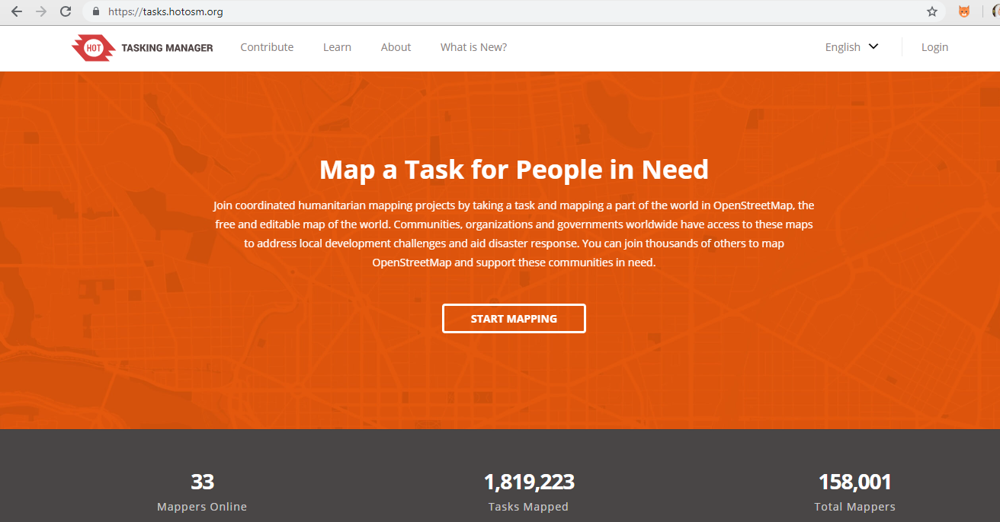
Tasking manager appearance
- Please log in using your OpenStreetMap account by click Login button in the right corner.
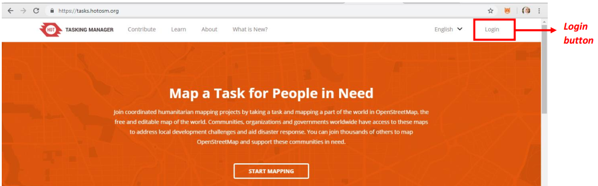
Login button on tasking manager
- You will be directed to OpenStreetMap site and click Grant Access to allow your account to be accessed by the tasking manager.
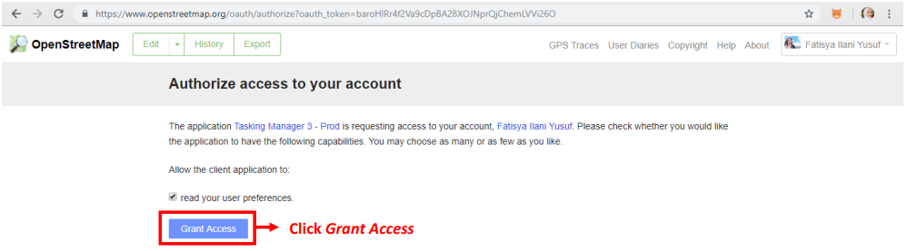
Grant Access your OSM account
- Then you have successfully logged in tasking manager. You can start validation by click Contribute or click Start Mapping.
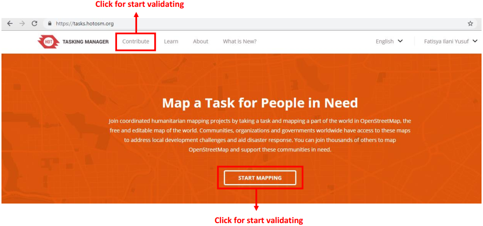
Contribute and Start Mapping button to start validation
- Then your display will look like the image below.
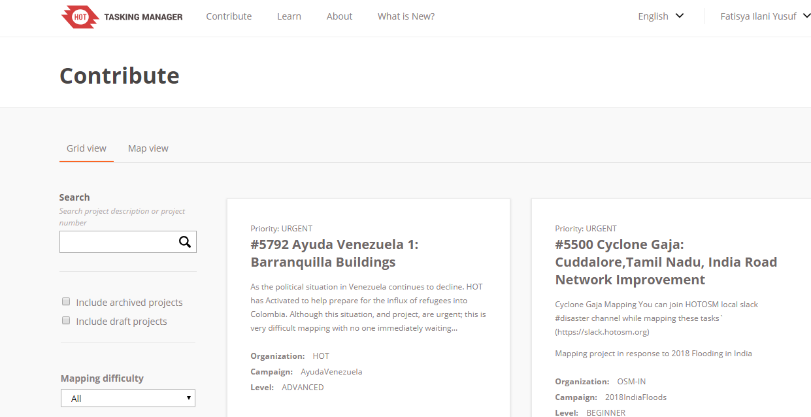
Contribute display
- You can choose one of the many tasks that are available for validation. Or you can also search for the tasking you want to validate by typing the keyword in the Search column on the left side of tasking manager, then press Enter. You will see a list of tasks that are related to the keywords you were previously looking for. Please search and select the tasking that you want to validate.
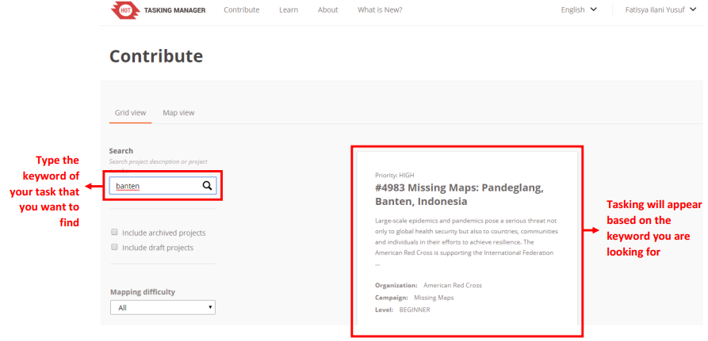
Example of search using entered keywords
- After you select the tasking that you want to validate, you will see a general explanation of the tasking
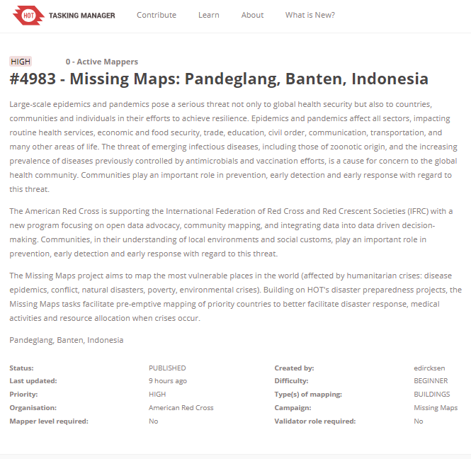
General information about the tasking
- If you scroll down, you will see the Instructions. Above the instructions there are four tabs, one of them is validate. You can start validation by click Validate. Besides by click validate, at the bottom there is a question box “Ready to get started?” with the Map and Validate options, please choose Validate.
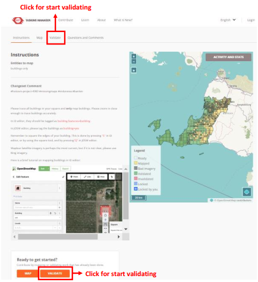
Option to start validation
- For information, the box or grid that you will validate is the one that has been mapped or the orange color. When you have finished validating, the box you are working on will turn green.
After you click validate, there are several options for choosing which box you want to choose. For those whose role as mapper or validator, there are only two choices, the first and the second choice, while the five choices can only be done by the project manager role. There are options:
- The first option is to choose one orange color box by yourself.
- The second option is let tasking select one orange box to be validated randomly.
- The third option is to select the area to be validated by drawing a polygon, and then tasking will automatically select several tasking boxes according to the area of the polygon you created, then click start validating.
- The fourth option can be chosen when you have locked one of the boxes, but you forget which box you have chosen. After you click option number four, tasking will automatically show the box you have chosen.
- The fifth option is to choose the tasking box based on the name of the contributor under the fifth option.
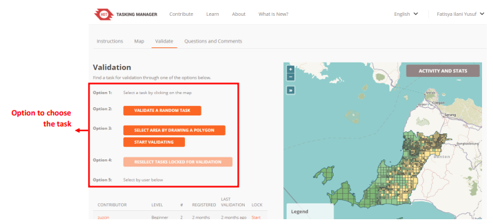
Options for selecting a validation box
- When you select the box you want to work, around your box will turn yellow. You can start validation by click Start Validating box. If you want to change the box, you can click Select Another Task box.
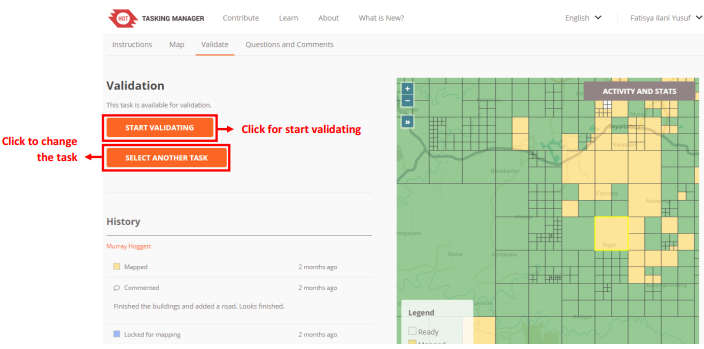
Display to start validation
- If you have already clicked Start Validating, the color of the box you selected will change to blue and yellow around the box. This indicates that you have activated the box to be validated. You can choose the tools you want to use for validation. You can use iD Editor, JOSM, Potlatch 2, and Field Papers. We recommend you to use JOSM when validating because JOSM has more features for editing.
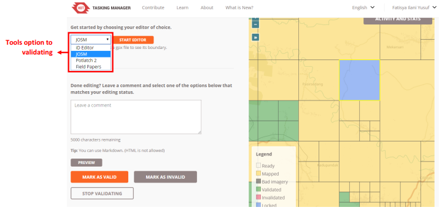
Choice of tools to do validation
- After you select JOSM as a tool for validation, you can immediately click Start Editor.
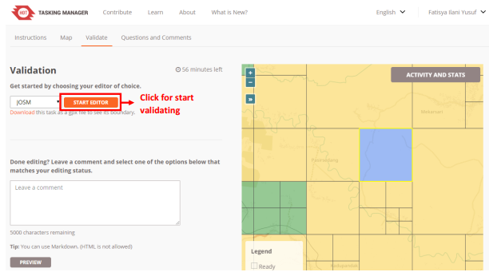
Start editor button to start validation
- After you click Start Editor, JOSM will automatically download OpenStreetMap data based on the grid/ box you have chosen. To use JOSM as a validation tool, you can learn through JOSM for Data Quality Calculation module.
- Once you have finished doing validation in JOSM and all the objects have been mapped, please go back to the tasking manager web browser and click Mark as Valid. If the selected grid/box has not been mapped or there are still many objects that have not been properly mapped, you can click Mark as Invalid. You can also add comments on the reason for the box in Mark as Invalid, for example, many unmapped objects, so the next contributor who chooses the box knows the error. After you click Mark as Invalid, other contributors can rework or add data to the box that you have Mark as Invalid. If you want to change the tasking box to be validated, you can click Stop Validating, so other people can continue validating in the box.
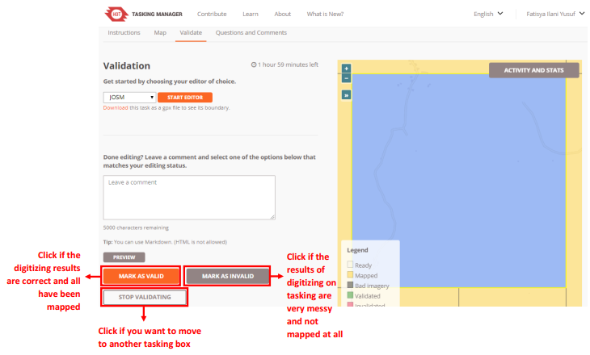
Buttons to choose after validation
- If you click Mark as Valid, then the tasking box that you previously selected turns into green. If you click Mark as Invalid, then the tasking box you previously selected changes color to pink. If you click Stop Validating, then the tasking box that you previously selected changes back to orange.
- When you have done validating in one box tasking, you can do validation in another orange box. Please validate like the previous steps.
b. Things to Watch When Do Validation in Tasking Manager
When you do validation using tasking manager there are things to watch, that is the time limit for working on the box you have chosen. If you have started validation, there is a time limit for working on the tasking you selected at the top like the picture below:
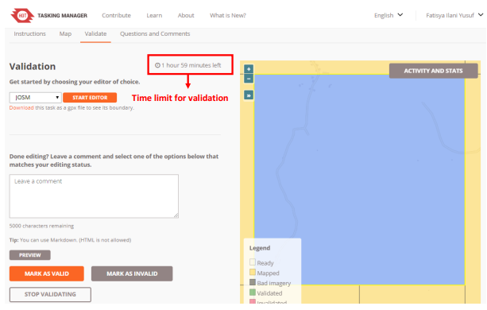
Time limit for validation
The time limit for working on validation using this tasking manager is two hours. After passing two hours (120 minutes), the tasking manager will automatically unlock the tasking box you have selected. If you are validating and need more than two hours, you should click Stop Validating before the duration of the two hours runs out, then select Start Editor again. Then you can continue validation again.
SUMMARY
You have learned and practiced how to validate using tasking manager. Validation using the tasking manager makes it easier for you to validate together with other people so the validation process can be completed faster. Next you will learn how to use JOSM to calculate data quality in OSM.